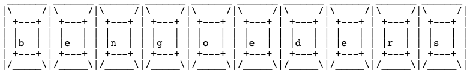

About Me
ben goeders -
is a freshman at Iowa State University. he is a pursuing a major in Computer Engineering. his interests lie in embedded systems, semiconductor design, UX design, and operating systems.
he also has experience with CAD tools such as fusion 360 and revit, and these skills show up in the projects he creates. currently, he is designing the physical components, electrical design, and code for a LED stage light.
outside of his studies, he is an avid music listener and player. he can often be found playing bass in his quartet or checking out a new album.
ben has programming experience in python, java, c, and embedded c++ (arduino).
© 2026 bengo prod.